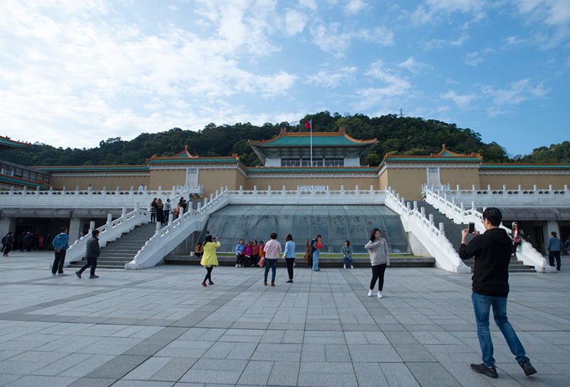
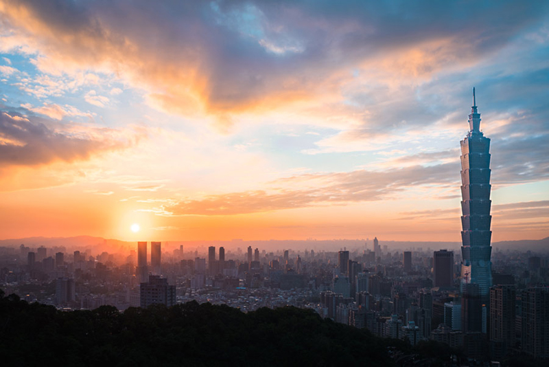
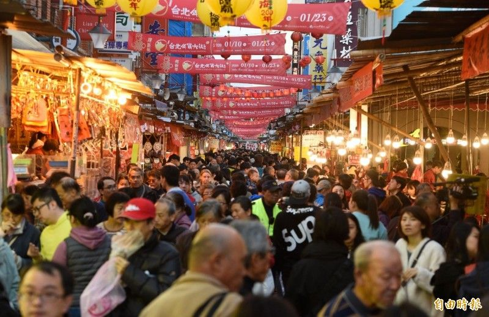
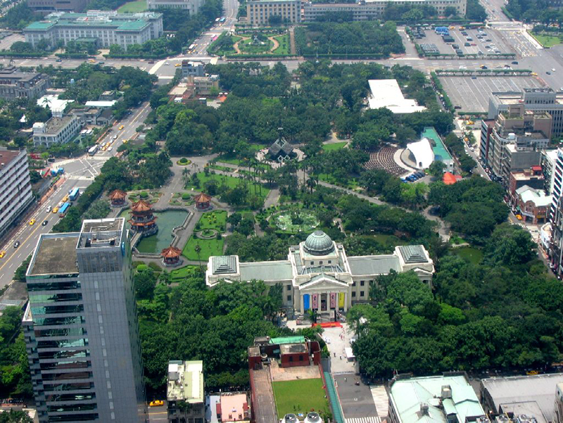

Lo mas destacado de Taipei
Museo del Palacio Nacional
Está considerado entre los cinco mejores museos del mundo, y en sus fondos tiene más de 700.000 piezas entre pinturas, cerámicas, caligrafía, etc. que resumen 5.000 años de la historia de China. Los guías del Museo Nacional de Taipei suelen contar que tiene las mejores obras artísticas chinas, ya que los disidentes con el régimen chino se las trajeron a Taiwán al huir del país. Las piezas que se consideran imprescindibles, en las que siempre habrá cola, son realmente interesantes.
Una de ellas, consideraba la Mona Lisa del museo, es la col de jadeíta, que parece que formaba parte de la dote que llevó al palacio la concubina del emperador Kuang-hsu (dinastía Ching). Simboliza la pureza de la esposa y se asocia con la fertilidad y la abundancia. Las otras dos obras estelares son una escultura de ágata en forma de carne frita de cerdo (dinastía Ching), y una vasija de bronce con miles de inscripciones (dinastía Chou Occidental). En las salas dedicadas a la cerámica cuentan con reproducciones para que los invidentes las puedan tocar. Por último, reserva también un poco de tiempo para pasear por sus jardines que ocupan casi dos hectáreas.
Rascacielo Taipéi 101
El que, con sus 508 metros, fue el edificio más alto del mundo durante algún tiempo sigue siendo, con diferencia, el gran mirador de la ciudad. Aunque tiene 101 pisos, sus tres miradores se sitúan en las plantas 88 y 89 (a unos 382 metros) y en la 91 (al aire libre). Además de su figura en forma de caña de bambú, en el Taipéi 101 llama la atención el gran péndulo situado en si interior (pesa 660 toneladas) que se encuentra suspendido y trata de compensar las oscilaciones del rascacielo causadas por el viento o por posibles movimientos sísmicos.
Su curioso nombre se asocia no solo con el número de plantas que tiene sino, también, con la perfección, ya que si la centena se relaciona con esta cualidad, ¡el 101 la sobrepasa! También es el número del distrito donde se sitúa, y evoca a los números binarios, que en un país tan tecnológico tiene su importancia.
Calle Dihua
Compuesta principalmente por puestos de telas y tiendas de alimentos secos, enlatados y té, el sector comercial en la calle Dihua de Taipei ha sido por muchos años el punto álgido para realizar compras por el Año Nuevo lunar en el norte de Taiwan. El 10 de enero inició en esta vía el período especial de ventas en puestos al aire libre de productos tradicionales como carne seca, dulces, nueces, así como coplas de primavera e ingredientes varios para la cena con motivo del Año Nuevo lunar. Multitudes de personas recorren los diversos puestos en un entorno festivo, degustando alimentos y escogiendo los artículos de su agrado. Estas ventas en puestos temporales concluirán el 23 de enero, poco antes del Año Nuevo lunar que empieza el día 25.
Parque Memorial de la paz
El Parque Conmemorativo a la Paz 2/28 ocupa una zona de la ciudad rodeada por la calles Gongyuan, Xiangyang, Huaining y por el Bulevar Ketagalan. El parque está construido en un estilo tradicional japonés con jardines, áreas verdes y estanques, puentes curvados, senderos y un anfiteatro. El Museo Conmemorativo 2/28 y el Monumento Conmemorativo 2/28 de Taipéi están también localizados en el parque.
